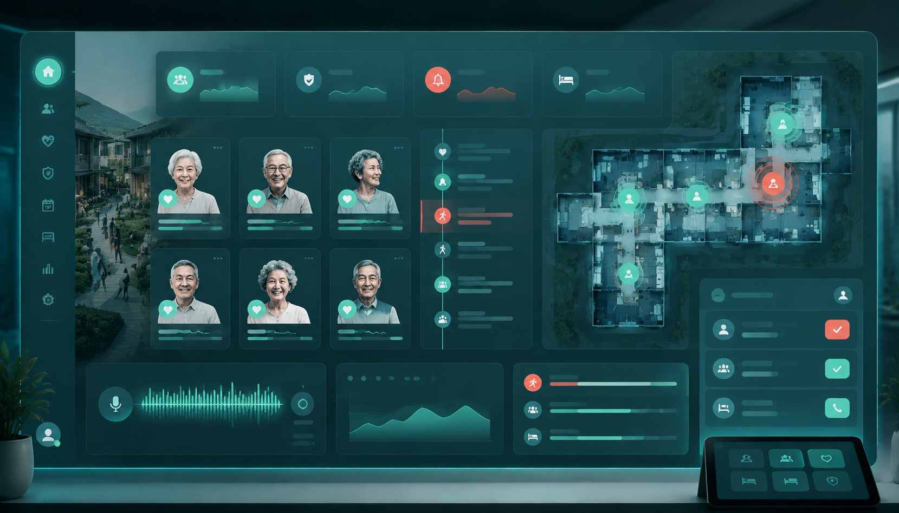

客厅呼救 + 疑似跌倒，剩余响应时限 01:42。
社区总控演示
社区总控台
青棠社区夜间值班中，系统同时监管 48 户重点老人， 统一处理音频异常、视频跌倒、设备离线和家属确认状态。
21:46 夜间加强模式
3 个待确认事件
危急 1 · 中风险 2 · 低风险自动归档 17
厨房撞击声，视频未见跌倒，等待家属确认。
卧室麦克风噪声升高，建议远程重启。
已完成 24 条社区响应记录，平均确认 38 秒。
事件处置台
事件处置
AudioCare Community Console
夜间加强模式
H-032 王奶奶
危急事件复核中
客厅 · 麦克风 A2 · 摄像头 C1
客厅
呼救
MIC A2
CAM C1
21:46:03
跌倒复核
厨房
撞击声
MIC B1
卧室
安静
CAM C2
卫生间
无事件
SOS
视频复核
疑似跌倒 0.72
画面检测到长时间低姿态静止，已截取 12s 证据片段。
处置进度
声音识别
视频复核
家属通知
社区派单
CRITICAL
王奶奶 · 客厅呼救事件
声音事件“呼救”持续 4.8s，视频检测到疑似跌倒，建议 2 分钟内联动社区值班员与 120。
- 音频置信度
- 0.86
- 跌倒概率
- 0.72
- 静止时长
- 118s
- 响应时限
- 2min
小程序通知
已推送给家属联系人、社区网格员、附近志愿者。
等待总控确认
派单闭环
派单闭环
每次异常都会形成可追溯记录，记录确认人、上门人员、家属回复和升级结果。
家属端小程序
王奶奶发生疑似跌倒
位置：青棠社区 3 栋 602 · 客厅
设备与模型状态
运行状态
H-041 噪声底升高，建议远程重启。
夜间红外正常，跌倒检测服务延迟 84ms。
今日有效声音事件识别准确率按人工复核回填。
仅保留异常前后证据片段，普通音视频不入库。